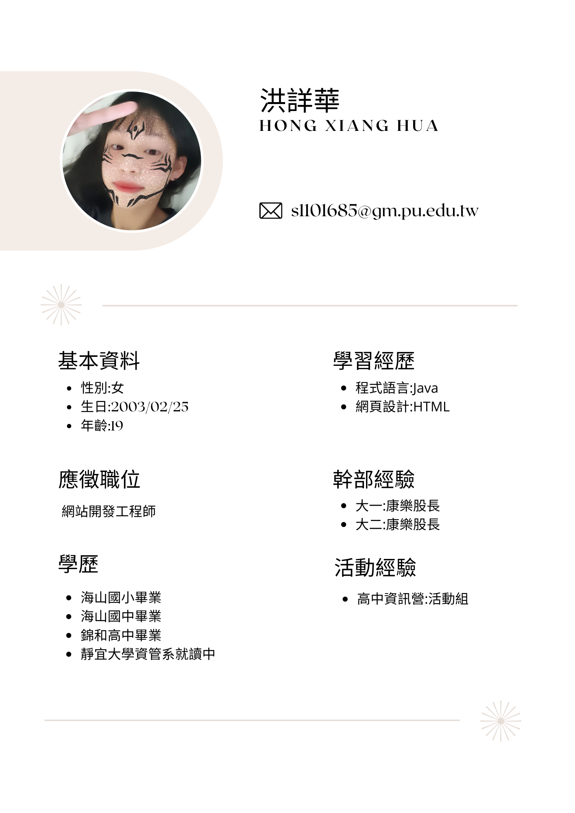

|  |
| 為何適任這份工作? | 求學經歷 | 未來規劃 |
|
我今年就讀靜宜大學資管系二年級，目前學習的程式是Java， 也有接觸網頁設計的部分，對於MIS有些初步的了解， 我對於電子商務相當有興趣，若擔任此職位，必定能好好勝任。 |
在大一的期間，我學習的程式語言是Java， 雖然在學習過程中不適特別順利，但我仍然沒有放棄， 在大二的期間，接觸了網頁前端設計以及商業類的知識， 讓我對於我的目標更加明確。在大學中，我也擔任班上的幹部， 擁有幫助他人以及虛心向其他人學習的能力。 |
在未來的大學生涯哩，我還會去修習其他程式語言， 讓我的專業領域可以更多，也會去修關於商業類的課程， 除了考取程式類型的證照外，還會考多益的證照， 為我的未來做準備。 |